Driving coaches in Euro Truck Simulator 2's Coaches DLC as an employed driver: hired by a coach company, assigned your duties, judged on keeping the timetable and on how your passengers felt, paid by the hour, and working up from probation and the night lines to the tours.
You are a coach driver, employed by a coach company. The company assigns your duties from the work the game offers; you drive them in the game and log each stop here; the app judges how it went and pays you for it.
The Coaches DLC gives Euro Truck Simulator 2 three kinds of passenger work: Quick Jobs, with a coach supplied; Contract Jobs, timetabled lines between bus stations with stops between, which need a coach of your own; and Tourist Jobs, a day trip to a landmark and back. Passengers each have their own sensitivity, react to harsh braking and sharp turns, and the game shows how satisfied they are as a percentage and in four groups, from very happy to very unhappy.
This app wraps a career around that:
The game decides which jobs exist, what it pays you in the game, and how your passengers react to your driving. The app decides which of those jobs your company gives you, judges how the duty went, and keeps your career: rank, record, pay and hours. The game's own pay is not touched: the app's pay is your career's, not your game bank.
Unzip TruckSimCoach.exe anywhere and run it. A console window opens and the app opens in your browser at
http://127.0.0.1:5373. Close the console window to stop it. It needs no install and no internet connection,
except to read screenshots (section 5).
Your career is kept in a folder called coach-data beside the exe, with dated backups. It never reads or
writes the other two apps' careers, so all three can sit in the same folder.
The app keeps the game's clock as a day number and a 24-hour time, the way ETS2 shows it. Day 1 is a Monday; the weekday is shown beside every day number so it can be checked by eye.
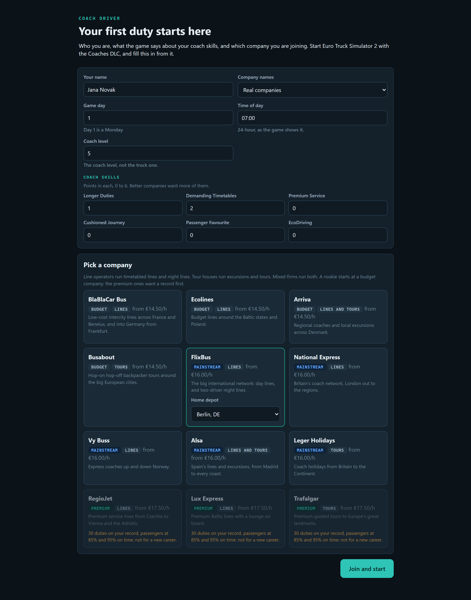
| Field | What to put |
|---|---|
| Your name | As you like. |
| Company names | Real companies by their own names (FlixBus, RegioJet, National Express...) or Invented ones in their place. Changeable later in Settings. |
| Game day and time | Off the game's clock. A fresh profile is Day 1. |
| Coach level | The coach level from the game, which is separate from your truck level. |
| Coach skills | Your points, 0 to 6, in each of the six coach skills: Longer Duties, Demanding Timetables, Premium Service, Cushioned Journey, Passenger Favourite, EcoDriving. |
Each company card shows its tier, the work it runs and its starting rate. A company that will not take you yet says what it wants, and as you type your level and skills the list updates. Pick one, then pick your home depot from its depots: where you live, where your duties are planned to bring you back to.
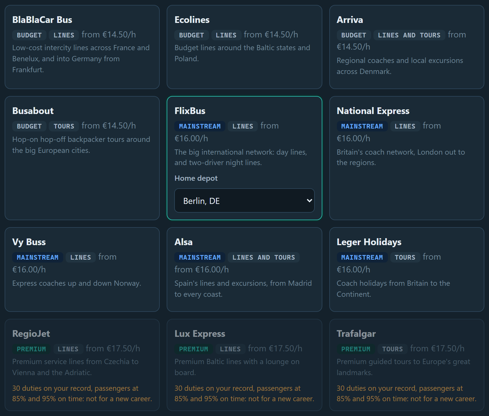
| Tier | Takes | Starting rate |
|---|---|---|
| Budget | Anyone. | €14.50/h |
| Mainstream | Coach level 4, a point in Demanding Timetables, and after five duties passengers at 70% and 90% of stops on time; no dismissal in the last 60 days. | €16.00/h |
| Premium | Coach level 10, 2 points each in Premium Service and Cushioned Journey, 30 duties on your record with passengers at 85% and 95% on time, and no warning standing. | €17.50/h |
On joining, the company assigns you a coach model and a fleet number: a Volvo 9700 DD at FlixBus, a Neoplan Skyliner at RegioJet, a MAN Lion's Coach at a budget firm. Buy that model in the game: Contract Jobs need a coach of your own. Then press It is in my garage. Until you do, the company will not hand you a contract duty.
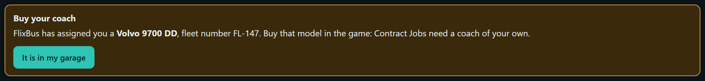
Coaches have their own garage area in the game and do not use up truck slots. Money is shared with truck mode, so a few Quick Jobs or truck loads may be needed first.
The coach is the company's, and you are held to how you treat it: its damage is read after every run, and it has a service and inspections to keep. See section 10.
Open the game's Contract Jobs and Tourist Jobs menus where you are, and bring what they offer into the app. That is the board the company assigns from.
With an Anthropic API key in Settings, take screenshots of the menus and paste them into the Today tab with Ctrl+V, drop them in, or Browse for them. The menus scroll, so take one of each screen: up to 24 go in one read. They show as thumbnails you can remove before reading. Press Read: each is read on its own, six at a time, and a job that appears on two overlapping screenshots is kept once.
Contract Jobs and Tourist Jobs can be read together: the app tells them apart by what they name (a destination station, or a landmark). Or say which menu the screenshots are of with These screenshots are of.
Without a key, open Type a job in: the menu (Contract or Tourist), the passengers and pay if shown, and the stops in order. The first stop needs its departure time. Leave a time blank where the menu shows none: the app works it out from the distance and marks it so. Give Stops in all as the menu counts them. A tourist job needs only the station it leaves from and the city its landmark is in; the app adds the way back.
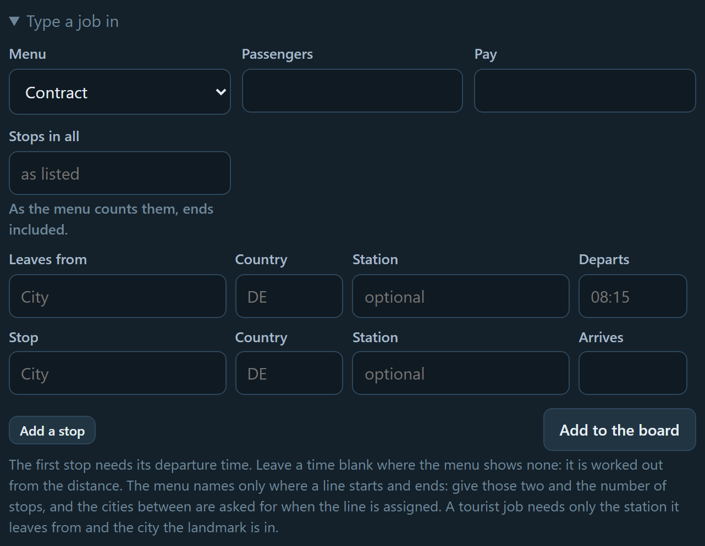
The menu shows how many stops a line makes, ends included, but names only where it starts and ends: 2 stops is straight through, 3 stops calls at one city on the way, 4 stops at two. The app saves the line with its two ends, their times and the count, so it knows where the line goes. The cities between are asked for when the company assigns you that line: open the job's route in the game and put them in, in order. The library keeps them, and reading the same menu again does not lose them, so each line is asked about once.
Each job read in is saved to the route library (section 17) and taken to run every day at the same times. Seeing it again confirms it. A line through the small hours (any of it between 00:00 and 05:00) is a night line. Place names are kept in one spelling, the English one the game shows: Prague and Praha are the same place.
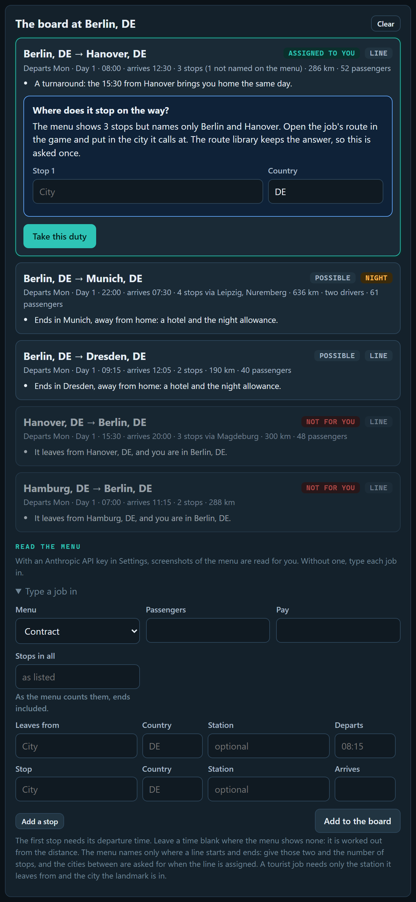
The company asks two questions, in order.
A driver at home costs the company nothing overnight; a driver away costs a hotel and the night allowance. So, of what you may run, the company prefers in order:
Ending away scores lower still when your weekly rest is close. Night lines go to probationers: the hours nobody wants go to the newest driver. Tourist trips go to the experienced: seldom to a probationer, more often the higher your rank, and more again at a company that runs tours. Pay and length decide only between duties otherwise equal.
You take what the company assigns: Take this duty. Where the line's cities between are not known yet, put them in first.
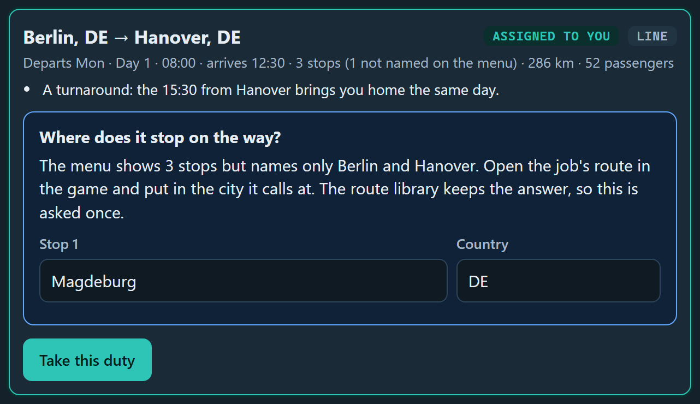
If the job has gone from the game's menu, hand it back, which costs nothing, and read the board in again.
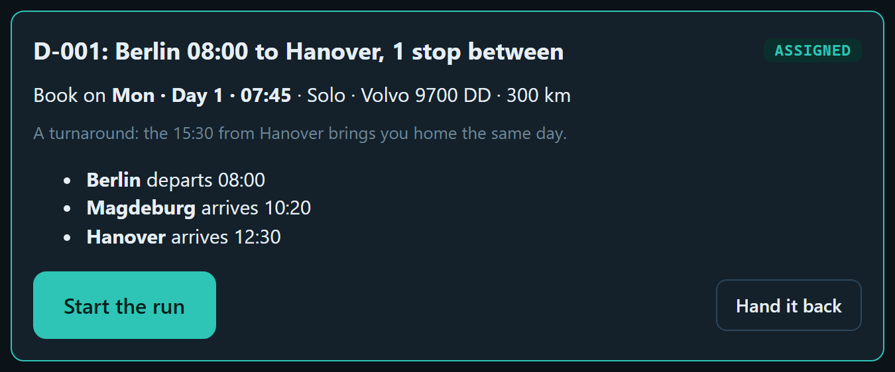
Confirm the line in the game, drive it, and log each stop here as you reach it and leave it. The Run tab shows the stops as a timeline with the next step open.
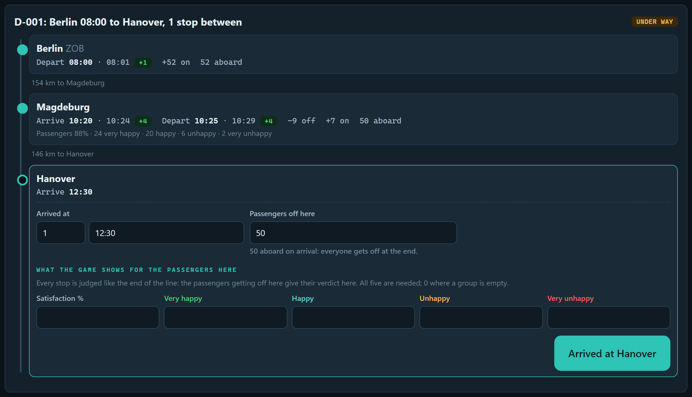
The time you left and how many passengers boarded there (0 if nobody). Book-on is fifteen minutes before the first departure, for the pre-trip check.
Leaving a stop before the timetable says leaves behind passengers who came for the time on their ticket. An early departure (more than a minute early) is worse than arriving late: it is counted against you whatever else happened, and cannot be put down to anything else.
The time you arrived, how many got off (0 if nobody), and what the game shows for your passengers: the satisfaction % and the count in each of the four groups. The load changes at every stop, so the counts are asked for at every stop: the app keeps the number aboard, shows it on the timeline, refuses more getting off than were aboard, and fills in everyone at the last stop. Arriving early is fine; the coach waits. Up to 5 minutes late counts as on time; 5 to 15 minutes is late; over 15 is very late.
The passengers getting off at a stop on the way give their verdict there, just as those riding to the last stop do at the end. So every arrival needs the satisfaction % and all four counts (0 where a group is empty). The duty's satisfaction is every stop's, averaged, each counting the same, and the worst stop is judged on its own as well: passengers made angry at the second stop are not undone by a happy coach at the last. The complaints are the most very unhappy passengers seen at any one stop. The close-out lists each stop's figures, and the last stop's are asked for again in case the game's end-of-trip summary differs.
Two kinds of line run with two drivers, as the big operators run them: a night line with more than 4h30 of driving, and any line with more driving than one driver's day (over 9 hours), day or night. The game has one driver, you, so the app keeps the second one: each leg is marked You drive or Co-driver. Because only your own share counts against your hours, a line too long for one driver can be assigned to you, where your rank and skills allow its length.
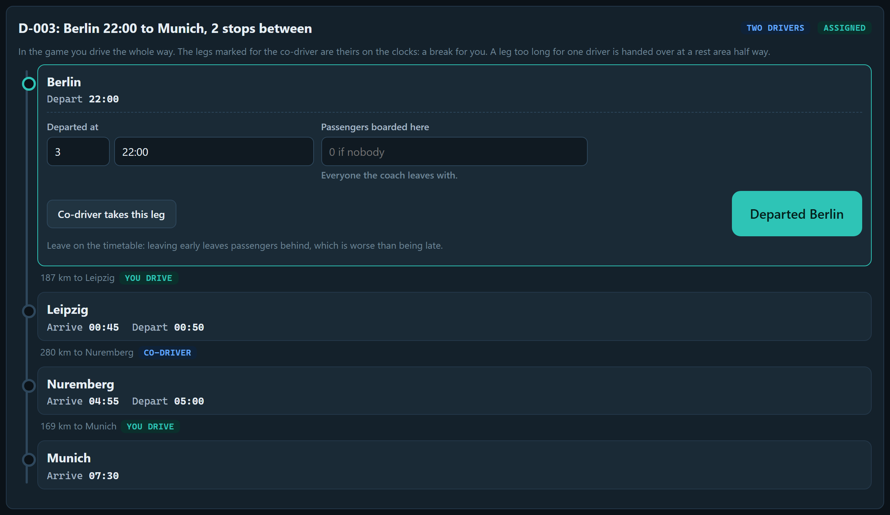
At the last stop, give the final figures from the game's end-of-trip summary if they changed, and whose doing any lateness was: you, the road (traffic, roadworks, weather), the game (a crash, a reload) or the coach (a breakdown). Lateness that was not yours is not held against you. An early departure always is.
Then the coach's damage, as the game shows it now, and whose doing any new damage was: yours, another road user's, or the game's. It is needed every time, even when it is 0 (section 10).
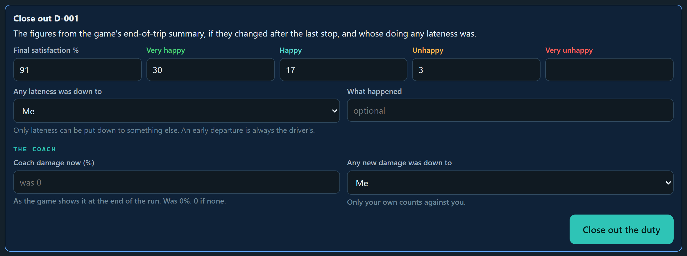
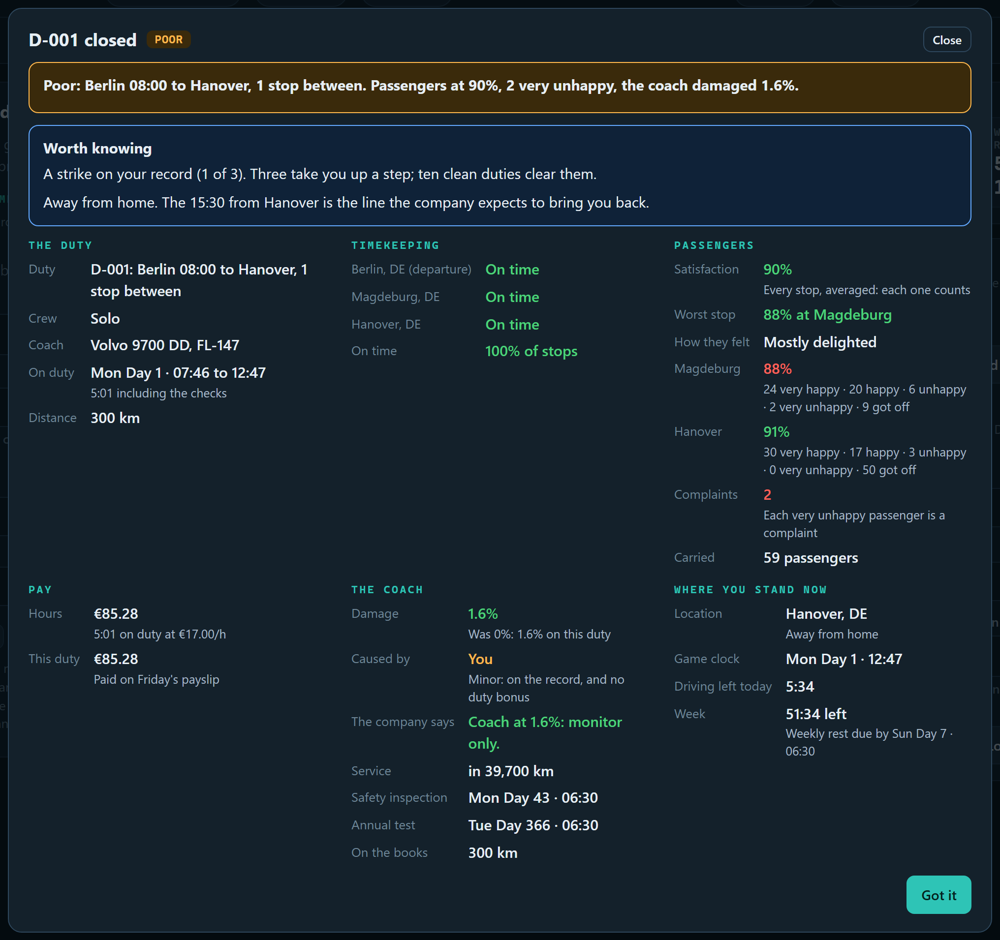
| Grade | When | What follows |
|---|---|---|
| Excellent | Every stop on time, no early departure, passengers at 85% or better over the duty and 80% at every stop, nobody very unhappy, within the hours, and no damage of yours over 1%. | A duty bonus on your pay. |
| Good | Anything between. | Nothing; it counts as clean. |
| Poor | A stop more than 15 minutes late (yours), an early departure, passengers under 60% over the duty or under 50% at any stop, two or more very unhappy, an hours infringement, or 5% to 15% of damage that was yours. | A strike. |
| Bad | Two of those timekeeping failures, passengers under 45% over the duty or under 35% at any stop, or two infringements, or 15% or more of damage that was yours. | Two strikes, and a step up the ladder at once. Past 25% of damage, a final warning at once. |
Each very unhappy passenger is a complaint. The four groups are summed up as how the passengers felt: mostly delighted, mostly content, mixed, or mostly unhappy.
The coach is held to the same rules as a truck in TruckSim Dispatcher. Its damage is read after every run: at the close-out of a duty, and at the end of every empty run. What a run did to it is the reading after, less the reading before. Give the % the game shows for the coach, and whose doing any new damage was.
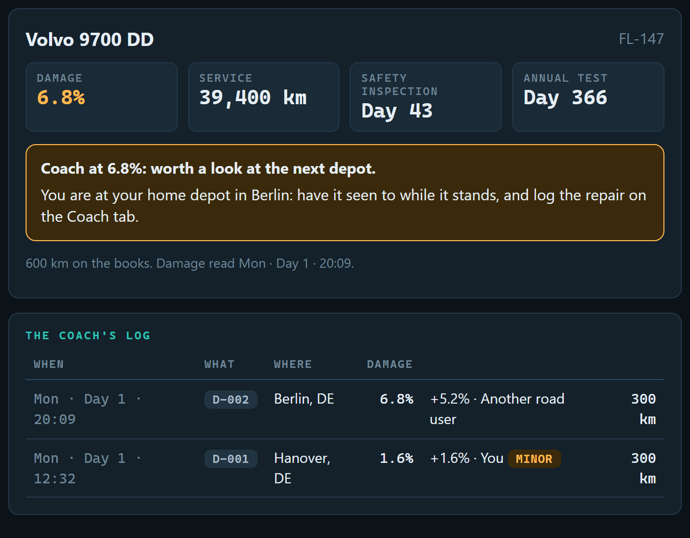
| Damage | What follows |
|---|---|
| Under 5% | Nothing. Monitor only. |
| 5% and up | Worth a look the next time the coach stands at a depot anyway: on a rest at home or in a depot. Not a trip on its own. The company leans a little toward work that ends at one of its garages. |
| 10% and up | No more passenger work until it is fixed. Home is the shop: the company's own garage is cheaper and the coach ends up where it is needed. Under 15%, a line that ends at your home depot still carries passengers, and if the board has one, the company puts you on it. Otherwise, run it home empty. |
| 15% and up | Nobody rides in it until it has been looked at. Home, empty, if that is within a day's driving and the damage is under 20%; otherwise the nearest shop on the road. |
| 30% and up | Out of service. The nearest shop and no further. |
Judged as the Dispatcher judges an incident, by what it did. Damage another road user caused, or the game, is put on the record and costs you nothing.
| On one run | What follows |
|---|---|
| Under 1% | Nothing: other people's mirrors are the job. |
| 1% to 5% | Minor. On the record, and the duty cannot be Excellent, so no duty bonus. |
| 5% to 15% | Moderate. A poor duty and a strike. |
| 15% to 25% | Serious. A bad duty: two strikes and a step up the ladder at once. |
| 25% and up | Major. A final warning at once; on probation, or already on a final warning, the end of the job. |
An empty run has no duty to grade, so damage on one is judged on its own: moderate is a strike, serious a step up the ladder, major a final warning. Small damage adds up too: promotion asks for less than 1.5% of your own damage per 1,000 km over your last 15 duties.
Do the work in the game, then log it on the Coach tab under At the shop: a repair (with the damage after it, usually 0), the service, the safety inspection or the annual test, or several at once. A repair can be done anywhere; the service and the inspections only in the company's own garage, at your home depot or an opened depot.
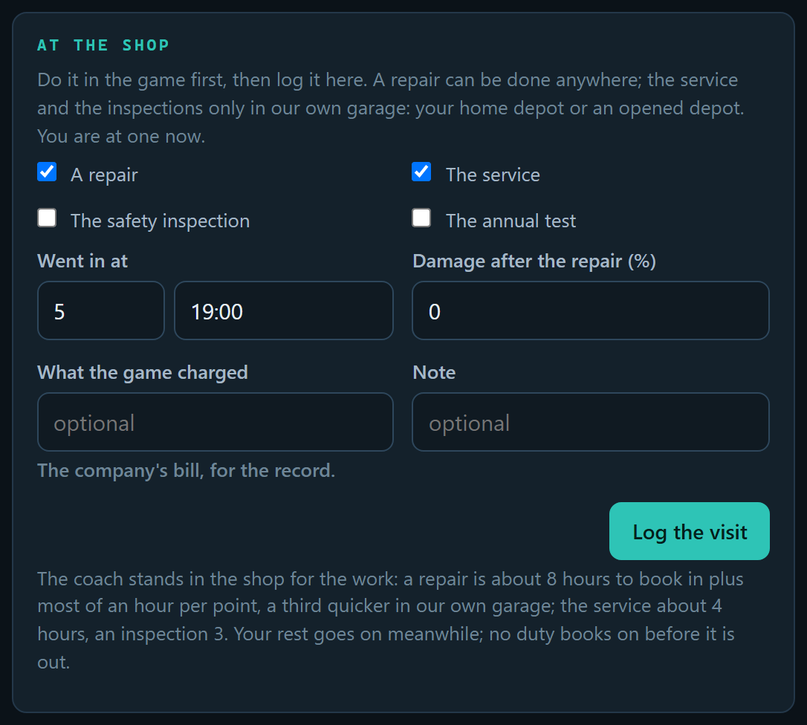
The coach stands in the shop for the work: a repair takes about 8 hours to book in plus 0.9 hours a point of damage, a third quicker in the company's garage; the service takes about 4 hours, an inspection 3. Your rest goes on meanwhile, but no duty books on, and the coach drives nowhere, until it is out.
The game has no service schedule, so the app keeps one from real coach practice:
| What | How often | Why that figure |
|---|---|---|
| Service | Every 40,000 km | MAN quotes up to 140,000 km or 18 months between oil changes on its coach engines, but operators check brakes, tyres and lubrication far more often than that, and Scania sets shorter intervals for stop-start and tourist work. 40,000 km sits between, close to the Dispatcher's 25,000-mile service. |
| Safety inspection | Every 6 weeks | UK operators declare an inspection interval to the regulator; six weeks is the norm for coaches, and the most for any over twelve years old. Germany asks for a safety check every 3 to 9 months on top of the annual test. |
| Annual test | Every year | The German Hauptuntersuchung or the UK annual test: yearly for every bus and coach. |
Coming up (the service within a tenth of its distance, an inspection within three days), the company leans toward work that ends at one of its garages, so it can be done there. Due, it says so. A service a tenth overdue keeps the coach to work that ends at a garage. Past an inspection or the annual test, the coach carries nobody: that is the operator's licence. The intervals can be changed in Settings.
A new company gives you a new coach: whatever happened to the last one stays with the last company.
Being on time with happy passengers pays. Being late with unhappy ones costs, and in the end costs the job.
| Rank | Work | Adds to the rate |
|---|---|---|
| Probationary driver | Night lines (the small-hours legs), short day lines, Sunday and holiday cover. At a tour house, local excursions. | — |
| Line driver | Day lines up to 600 km. | +€1.00/h |
| Senior line driver | Long and international lines. | +€2.00/h |
| Excursion driver | Tourist trips become your main work: tips. | +€2.50/h |
| Tour driver | Famous landmarks and multi-day tours: the best paid, with tips and allowances. | +€3.50/h |
A line operator's ladder ends at senior line driver. A tour house goes from probation to excursions to tours. A mixed firm has all five.
90 days for a first job, 30 for a driver who has passed probation before (who also starts a rank up). At the end it is passed with at least eight duties, passengers at 65% on average, and no more than a verbal warning: you move up a rank. Too few duties to judge extends it once, by 30 days.
After probation, a review every fortnight. The Career tab lists what still stands between you and the next rank.
| To | Duties here | Last 15: passengers / on time | Record | Coach level and skills |
|---|---|---|---|---|
| Line driver | 10 | 65% / 85% | A verbal warning at most | — |
| Senior line driver | 25 | 78% / 93% | A verbal warning at most | Level 8; Longer Duties 2, Demanding Timetables 2 |
| Excursion driver | 20 | 82% / 92% | Clean | Level 6; Passenger Favourite 1, Cushioned Journey 1 |
| Tour driver | 25 | 88% / 95% | Clean | Level 14; Cushioned Journey 3, Premium Service 2, Longer Duties 3 |
Keep your coach level and skills up to date on the Career tab as you level up in the game.
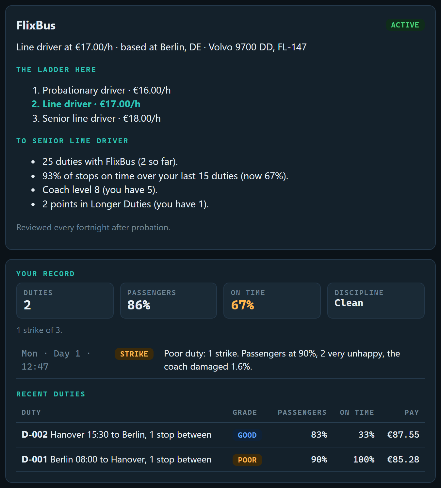
The Career tab lists every other company with what it wants, or a Join, based here button and a choice of depot. Joining resigns your current job. Your record goes with you; your discipline starts clean. Get to your new home depot with a positioning run (section 18).
Coach companies run from many bases: from five depots at a regional firm to a dozen at an international network, all on cities the ETS2 map has. Every depot is known from the day you join, but becomes one you can use only once you have been there.
Buy the garage at your home depot first: the Today tab asks.
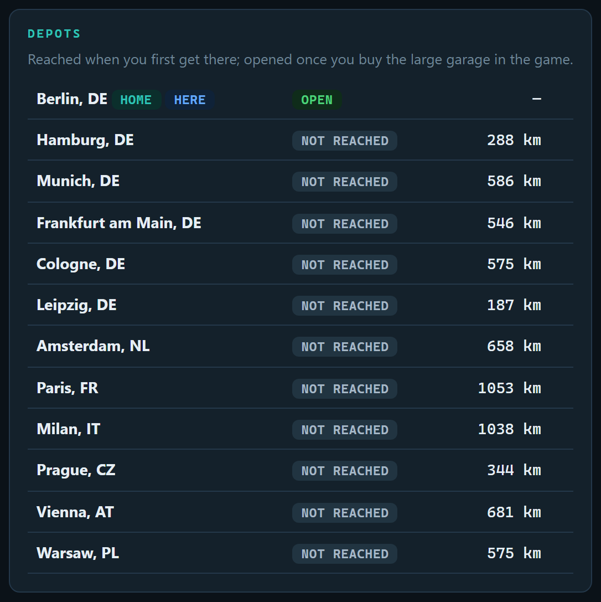
By the hour, the way coach drivers are paid, with the trade's extras. Gross figures: tax is yours.
| Item | How much |
|---|---|
| Hours | Book-on to book-off (fifteen minutes before the first departure to fifteen after the last arrival), at the company's rate for your rank. |
| Night supplement | +25% for every hour between 22:00 and 06:00. |
| Sunday supplement | +50% for every hour on a Sunday. |
| Daily allowance | €14 for a duty of more than eight hours. |
| Night allowance | €28 for a daily or weekly rest away from home, in a hotel the company pays or an opened depot's rest room. A turnaround home the same day earns none: none is needed. |
| Tips | Tourist jobs and tours only: about €1 a passenger, ×1.5 with passengers at 90%, ×1 at 75%, ×0.5 at 60%, nothing below. +10% for every point in Passenger Favourite. |
| Positioning | Driving the coach empty to where the work is: the plain rate. |
| Bonuses | The duty bonus, the four-weekly performance bonus (section 11), and the tour bonus (section 16). |
Payslips come on Fridays at 18:00, line by line. The Pay tab shows the week so far and every payslip.
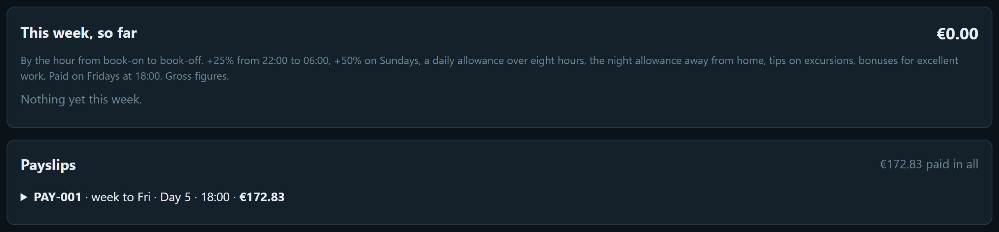
EU Regulation 561/2006, as it applies to a coach driver, kept from what you log: your legs are driving, time standing at a stop or between duties is rest.
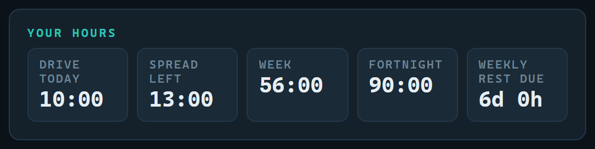
| Rule | Limit |
|---|---|
| Daily driving | 9 hours, 10 twice a week. |
| Weekly driving | 56 hours; 90 over two weeks. |
| Spread | 13 hours from the end of your last daily rest; 21 with a co-driver. |
| Daily rest | 9 hours or more off counts as a daily rest. |
| Weekly rest | 24 hours or more off, due after six 24-hour periods; after twelve on a tour. |
| Breaks | 45 minutes after 4h30 at the wheel, only with breaks switched on (below). |
The company will not assign a duty that does not fit. Driving past a limit while on a duty is an hours infringement on the close-out, and counts toward the grade.
The game's lines are timed without room for a 45-minute break, and a stop the timetable does not allow cannot be taken without running late. So the break rule is off unless you switch it on in Settings. With it on, a leg over 4h30 is timetabled with its break, the arrival asks for the break taken on the way, and driving past 4h30 without one is an infringement.
A tour driver at a company that runs tours can take a group on a multi-day tour from the home depot: 3 to 12 days, a city a day, each a day's drive from the last and from home, then back. Start one on the Today tab.
No source lists the Coaches DLC's lines, so the app builds its own: every job read in is kept, assumed to run every day at the same times. The Routes tab shows it, read only: lines change only when a new screenshot is read.
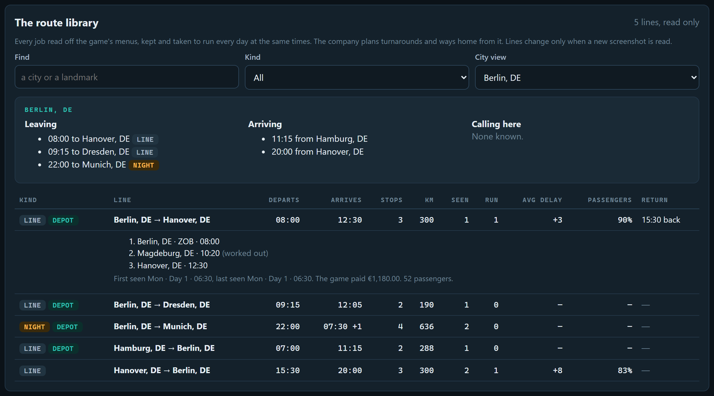
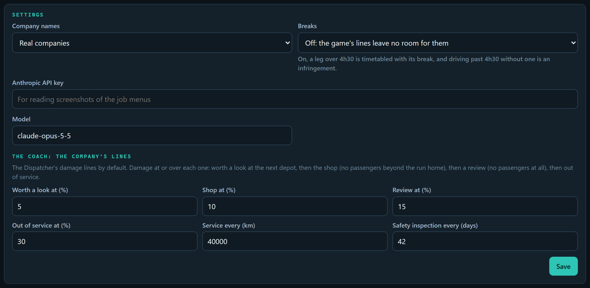
| Setting | What it does |
|---|---|
| Company names | Real or invented. |
| Breaks | Off by default; on holds you to the 45-minute break after 4h30 (section 15). |
| Anthropic API key | For reading screenshots of the job menus. Kept in your career file and never shown back. |
| The coach: the company's lines | The damage lines (5%, 10%, 15%, 30%), the service distance and the inspection interval (section 10). The Dispatcher's figures by default. |
| Start again | Type RESET. The old career is kept in the backups folder. |
When the game clock moves on without a duty (a night's sleep, the weekend), enter the new time under The game clock now. Time off counts as rest: nine hours or more is a daily rest, 24 or more a weekly one.
Driving the coach empty, to where the work is, to a new home depot or home for a repair: where to, when you left, when you arrived, and the coach's damage at the end. It counts as driving and is paid at the plain rate.
| What | Number |
|---|---|
| On time / late / very late at a stop | up to 5 min / 5 to 15 min / over 15 min |
| Early departure | More than 1 minute before the timetable |
| Excellent | All on time, passengers 85%+ over the duty and 80%+ at every stop, nobody very unhappy |
| Poor / Bad passengers | Under 60% / 45% over the duty, or under 50% / 35% at any stop |
| Strikes to a step / clean duties to step down | 3 / 10 |
| Probation | 90 days (30 after a first passed); 8 duties, 65% |
| Rates: budget / mainstream / premium | €14.50 / €16.00 / €17.50 an hour, plus the rank |
| Night / Sunday supplement | +25% / +50% |
| Daily / night allowance | €14 / €28 |
| Tips | €1 a passenger × satisfaction × Passenger Favourite |
| Performance bonus (4 weeks) | €150 or €60 |
| Rookie day lines / line driver day lines | 250 km / 600 km |
| Longer Duties needed | 1 over 500 km, 3 over 900 km |
| Demanding Timetables needed | 2 for 4+ stops between, 4 for 7+ |
| Two drivers | A night line with more than 4h30 of driving, or any line with more than 9 hours |
| Handover on the road | Half way along a leg over 4h30, with two drivers |
| Daily / weekly / fortnight driving | 9 h (10 twice) / 56 h / 90 h |
| Spread | 13 h; 21 h with a co-driver |
| Weekly rest due | After 6 days; 12 on a tour; 69 h after a long tour |
| Coach damage: a look / shop / review / out of service | 5% / 10% / 15% / 30% |
| Run home for a repair | Under 15% always; under 20% if within 9 hours |
| Your damage on a run: minor / moderate / serious / major | 1% / 5% / 15% / 25% |
| Repair time | 8 h + 0.9 h a point; ×0.7 in the company's garage |
| Service / safety inspection / annual test | 40,000 km / 6 weeks / a year |
Each job says why it is not for you. Most often: your rank, a skill, your hours (take a rest: move the clock on), or the weekly rest falling due. Read in more of the menu, or a board somewhere else.
On probation, that is the job. Pass it and they go to the next newcomer.
Hand it back on the Today tab, or at the foot of the Run tab. It costs nothing. Read the board in again.
At the foot of the Run tab, open The game lost this job (or press The game lost it on the Today tab, which takes you there). Give the time it was lost and the coach's damage, and give the duty up. Nothing goes on your record, and the time you worked from book-on until then is paid at the plain rate. The leg you were driving counts as driving. The coach is left at the last stop you logged: log a positioning run from there to wherever the game put you, or to the next job.
The clock only goes forward, so a time before the last one entered is refused. Check the day number against the weekday.
Say so at the close-out: lateness put down to the road, the game or the coach is not held against you. An early departure always is.
Say so when you give the damage: "another road user hit me". It goes on the coach's record and costs you nothing. The coach still needs fixing if it is over 10%.
Log the repair on the Coach tab. If you have already driven on and given a lower reading, the app notices the coach came back better than it went out, and says so.
Only a line that ends at your home depot carries passengers now. If the board has none, run the coach home empty (positioning on the Today tab) and repair it there.
Times the menu did not show are worked out from the distance, and marked "worked out". Read the line in again from a screenshot that shows them: shown times replace worked-out ones.